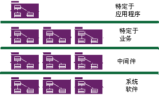

|

具有多个层的基于组件的体系结构
组件体系结构是一种基于可替换组件（如概念：组件中所述）的体系结构。因为组件体系结构基于独立的、可替换的模块组件，所以它们有助于控制复杂性并支持反复使用。
用例在整个生命周期内自始至终推动了 Rational Unified Process（RUP），但设计活动则围绕了系统体系结构（对于软件密集型系统，是软件体系结构）的概念。 流程早期迭代（多数在精化阶段）主要关注的是生成和验证软件体系结构，它在初始开发周期采用可执行体系结构原型的形式，该体系结构原型在以后的迭代中逐渐演化为最终的系统。
通过可执行体系结构，我们打算部分实施为了演示所选系统功能和属性（尤其是满足非功能需求的）而构造的系统。可执行体系结构用于降低与性能、吞吐量、容量、可靠性和其他“能力”相关的风险，这样就可以可靠地在构造阶段添加系统的完整功能，而无损坏之虞。
关于体系结构（具体地说，是软件体系结构）概念的简介以及该概念为何至关重要的说明，请参阅概念：软件体系结构。
RUP 提供了一种讲究方法的、系统的方式来设计、开发和验证体系结构。我们为围绕多体系结构视图概念的体系结构描述，以及为捕获体系结构风格、设计规则和约束提供了模板。分析与设计规程包含旨在确定体系结构约束和重要体系结构元素的具体活动，以及关于如何选择体系结构的指导信息。管理流程显示了在计划早期迭代时如何考虑到体系结构的设计以及解决主要技术风险。关于进一步信息，请参阅项目管理规程以及与角色：软件设计人员相关联的所有活动。
体系结构的重要性在于几个原因：
-
它使您可以获得并保留对项目的灵巧控制，控制其复杂性并维护系统完整性。
复杂的系统不仅仅是其组成部分的简单相加；也不仅仅是一连串小的独立战术决策。 它必须采用某种统一、一致的结构来系统地组织这些组成部分，并且它必须提供关于如何发展系统的精确规则，而不会使其复杂性“膨胀”到超出人类的理解。
体系结构通过建立一组公共引用和一个用以讨论设计问题的公共词汇表，确立了在整个项目范围内改进沟通和理解的方式。
通过阐明主要组件和它们之间的关键接口，体系结构使您可以实现重用，包括内部重用（确定公共部分）和外部重用（合并完备的开包即用组件）。但是，它也允许进行更大规模的重用：在着重于共同领域中不同功能的产品线环境中重用体系结构本身。
计划和人员配备是根据主要组件来组织的。 基础结构决策由一个小而团结的体系结构团队采纳；不公布这些决策。开发分给几个小团队来执行，每个团队都负责系统的一部分或几部分。
基于组件的开发是常规应用程序开发的变体，其中：
-
应用程序是分散的可执行组件构建而成，这些组件可能由不同的团队相互之间相对独立地开发的。在 RUP 中它们称为“组合组件”。关于更详细的定义，请参阅概念：组件。
-
应用程序可通过只升级构成应用程序的某些组合组件来进行较小幅度地升级。
-
组合组件可由多个应用程序共享，为复用创造机会，但也产生了项目之间的依赖关系。
-
虽然与“基于组件”关系不大，但基于组件的应用程序往往是分布式的。
组合组件的生成有以下原因：
-
在定义非常模块化的体系结构时，您确定、分离、设计、开发和测试结构良好的组件。 这些组件可以分别测试和逐渐集成，以构成整个系统。
-
而且，可以将其中一些组件开发为可重用的组件，尤其是那些对大范围的公共问题提供公共解决方案的组件。这些可重用的组件（可能不仅仅是实用程序或类库的集合）形成了在组织内重用的基础，提高了整体软件生产率和质量。
-
最近，一些商业运作成功的组件基础结构（例如 CORBA、Internet、ActiveX、JavaBeans、.NET 和 J2EE）的出现触发了一整个针对各领域的开包即用组件的行业，使您可以购买和集成组件，而不是全部自行开发。
上述列表的第一点采用了旧的模块化和封装概念，使这些面向对象技术的底层概念前进了一步。该列表中的最后两点将软件开发从一次编程一行转换到通过组合组件来组成软件。
RUP 以这些方式支持基于组件的开发：
-
迭代法允许您循序渐进地确定组件，并决定开发哪些组件、重用哪些组件以及购买哪些组件。
-
关注软件组件，使您可以清楚地阐述结构（组件以及它们的集成方式），包括它们交互的基础机制和模式。这反过来支持项目管理的计划方面，因为组件相关性可以帮助确定哪些组件可以同时开发，以及哪些要按顺序开发。
-
在分析与设计期间使用诸如包、子系统和层之类的概念，以组织组件和指定接口。
-
先对组件组织测试，然后逐渐对较大组的集成组件组织测试。
关于组件的更多信息，请参阅概念：组件。
|